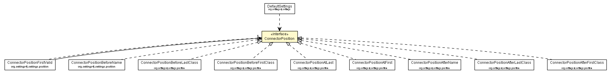

org.settings4j
Interface ConnectorPosition

- All Known Implementing Classes:
- ConnectorPositionAfterFirstClass, ConnectorPositionAfterLastClass, ConnectorPositionAfterName, ConnectorPositionAtFirst, ConnectorPositionAtLast, ConnectorPositionBeforeFirstClass, ConnectorPositionBeforeLastClass, ConnectorPositionBeforeName, ConnectorPositionFirstValid
public interface ConnectorPosition
Interface to show on which position a Connector should be added with List.add(int, Object).
Default Implementations
The easiest way to get an instance of a ConnectorPosition implementation is to use the Factory Methods from
ConnectorPositions:
// get the ConnectorPosition instance for the postion after the last
// SystemPropertyConnector
ConnectorPositions.afterLast(SystemPropertyConnector.class);
- Author:
- brabenetz
|
Field Summary |
static int |
UNKNOWN_POSITION
the position value it the position cannot be determined. |
UNKNOWN_POSITION
static final int UNKNOWN_POSITION
- the position value it the position cannot be determined.
- See Also:
- Constant Field Values
getPosition
int getPosition(List<Connector> connectors)
- Parameters:
connectors - the existing list of connectors.
- Returns:
- the position where the new Connector should be added.
Copyright © 2008–2014. All rights reserved.